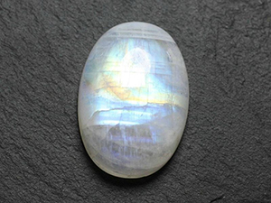

sam. 19 sept 2020
hey, regarde ce que j’ai trouvé au marché aujourd’hui

waw elle est cool !
en plus elle était pas cher !
le vendeur m’a dit qu’il l’avait trouvé dans son grenier et qu’il savait pas trop quel pierre c’était
Dim. 20 sept 2020
salut t’es là samedi prochain ?
je suis libre on pourrait se faire un truc
je sais pas je te redis demain
ok
Lun. 21 sept 2020
alors tu peux samedi ?
Mar. 22 sept 2020
hello
tu fais quoi ?
Mer. 23 sept 2020
hey salut, j’ai un truc fou à te raconter

t’étais où ?
justement je vais t’expliquer
il s’est passé un truc bizarre
qu’est ce qui s’est passé ?
quand je me suis réveillé lundi matin, j’étais plus chez moi, mais dans une forêt bizarre avec des arbre en cristal
sympa tes rêves, je me souviens jamais des miens !
non c’était pas un rêve
ouai ouai…
bref j’étais perdu et j’ai voulu prendre une photo de la forêt, mais mon téléphone était HS, alors j’ai fait un croquis

waw t’es doué en dessin !
eu merci
enfin, il manque beau de détails on apercevait entre les branches des immenses oiseaux
ok et ensuite ?
je me suis baladé et là j’ai croisé quelqu’un, elle m’a regardé bizarrement et elle ma demandé ce que je faisais la, alors j’lui ai dit que je m’étais perdu et elle a rigolé.
pi elle a pris un air sérieux et m’a dit « à merde tu viens d’un autre monde »
haha attends quoi ? un autre monde carrément ! 🤦🏽♀️
Et tu veux que je gobe ça ? t’était bourré et tu veux pas l’admettre !! XD
quoi ?
Non !
bref continue
elle m’a expliqué qu’ici on était dans le monde originel au pied d’un genre d’arbre légendaire connecté aux autres mondes, et des fois yavait des bug, genre des trucs d’autres mondes qui venait ici, comme ça m’est arrivé
ces explications étaient plus complexes mais c’est ce que j’ai retenu
waw avec cette inspi tu peux contacter Netflix haha
Ils feront une série avec tout ça ! x)
eu ouais
après elle m’a proposé de m’aider à rentrer dans mon monde alors j’ai accepté
on est allé vers ce fameux arbre légendaire, c’était fou, il était gigantesque et entièrement en cristal
ho waw
finalement on est entré dans un portail, c’était un endroit très dangereux alors on est vite ressortis et on est allé dans d’autres portails mais aucun des endroits qu’on a vus ressemblais à notre monde.
mais c’était hyper cool de voyager entre les mondes
Bon, certain faisait peur mais yen avais beaucoup qui était cool
haha tu me donne envie de voyager
c’est vrai que ça faisait voyager !
mais finalement on a trouvé mon monde et elle m’y a laissé
waw cool, c’est quand que tu fais une série ?
ha ha très drôle…
bref je dois aller manger a plus
a plus
Jeu. 24 sept 2020
regarde ce que j’ai trouvé sur internet !
c’est une créature mythologique et elle ressemble énormément aux grands oiseaux que j’ai vu !
haha quel drôle de coïncidence
ven. 25 sept 2020
C’est quand même bizarre
bon arrête de t’moquer d'moi j’vais pas croire ton histoire tordue !
(non distribué !)